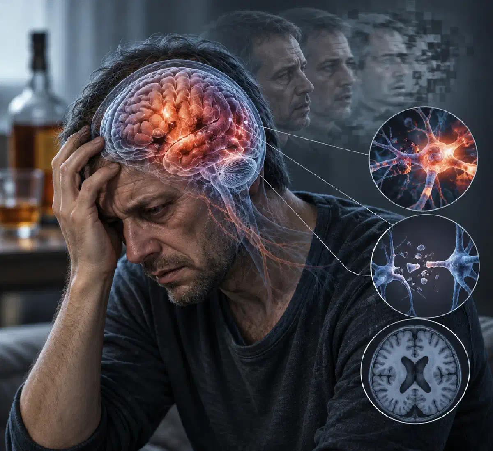

+38(068)
79 72 782
+38(068)
79 72 782Алкогольная энцефалопатия: 5 тревожных признаков поражения мозга
Причины и лечение


Бесплатная консультация, работаем круглосуточно 24/7
Причины и лечение

Дата написания: 12 апр. 2026 г.
Последнее обновление: 23 окт. 2026 г.
Алкогольная энцефалопатия — это поражение головного мозга, связанное с продолжительным злоупотреблением алкоголем, токсическим воздействием этанола, нарушениями обмена веществ и дефицитом жизненно важных витаминов. Заболевание может сопровождаться ухудшением памяти, снижением интеллектуальных способностей, изменениями поведения, нарушением координации движений и расстройствами сознания. Некоторые формы алкогольного поражения мозга развиваются постепенно, тогда как другие способны привести к тяжёлым неврологическим осложнениям за короткое время. Особую опасность представляют энцефалопатия Вернике и синдром Корсакова, которые связаны преимущественно с недостатком витамина B1 (тиамина). Без своевременного лечения эти состояния могут привести к стойким нарушениям памяти, утрате самостоятельности и угрожающим жизни осложнениям. Важно понимать, что первые симптомы алкогольной энцефалопатии нередко воспринимаются окружающими как обычная усталость, последствия похмелья или изменения характера человека. Однако прогрессирующие нарушения работы головного мозга требуют медицинского обследования. При появлении спутанности сознания, выраженной шаткости походки или других острых неврологических симптомов необходима экстренная медицинская помощь.
Алкогольная энцефалопатия — обобщённое название группы нарушений функции и структуры головного мозга, возникающих на фоне длительного вредного употребления алкоголя и связанных с ним осложнений. В современной медицинской практике также используется понятие алкоголь-ассоциированного поражения головного мозга, которое включает когнитивные нарушения, энцефалопатию Вернике и синдром Корсакова. Этанол и его метаболиты способны нарушать работу нервных клеток, изменять передачу сигналов между нейронами и способствовать развитию нейровоспалительных процессов. Длительное употребление алкоголя также сопровождается нарушениями питания, дефицитом витаминов группы B, изменением обмена глюкозы и повреждением внутренних органов. Особенно чувствительными оказываются структуры головного мозга, отвечающие за память, внимание, планирование действий, эмоциональную регуляцию и координацию движений. В результате человек постепенно теряет способность эффективно обрабатывать информацию, контролировать поведение и выполнять привычные интеллектуальные задачи. Тяжесть повреждений зависит от продолжительности употребления алкоголя, количества выпиваемого спиртного, общего состояния здоровья, полноценности питания и наличия сопутствующих заболеваний. При своевременном прекращении употребления алкоголя и правильно организованном лечении алкогольной зависимости часть нарушений может уменьшаться.
Основной причиной развития алкоголь-ассоциированного поражения головного мозга является продолжительное вредное воздействие алкоголя на нервную систему. Однако заболевание формируется не только вследствие прямого токсического действия этанола. Существенную роль играют нарушения обмена веществ, недостаточное питание и заболевания внутренних органов. Одним из важнейших механизмов является дефицит витамина B1, необходимого для энергетического обмена в нервных клетках. При алкогольной зависимости часто нарушаются поступление, всасывание и использование тиамина. В результате ткани головного мозга испытывают энергетический дефицит, что повышает риск повреждения нейронов. Дополнительными факторами становятся повторяющиеся длительные запои, недостаточное употребление пищи, обезвоживание, дефицит электролитов, заболевания печени и перенесённые эпизоды тяжёлой алкогольной абстиненции. При выраженном нарушении функции печени возможно развитие печёночной энцефалопатии, которая требует отдельной диагностики и лечения. Риск возрастает у пациентов с многолетней алкогольной зависимостью, выраженным истощением, повторными госпитализациями по поводу алкогольной интоксикации и недостаточным медицинским наблюдением. При этом энцефалопатия Вернике может возникнуть и без многолетнего злоупотребления алкоголем, если развивается тяжёлый дефицит тиамина.
Начальные проявления алкогольного поражения головного мозга могут быть малозаметными. Человек становится рассеянным, быстрее утомляется, испытывает трудности с запоминанием новой информации и хуже справляется с привычными задачами. Родственники нередко замечают изменение характера, снижение интереса к работе и повседневным обязанностям. По мере прогрессирования нарушений могут появляться забывчивость, сложности с ориентированием, нарушения сна, нестабильность походки и ухудшение способности принимать решения. Иногда пациент не осознаёт выраженность собственного состояния и отказывается от обследования. Особого внимания требуют пять групп симптомов: ухудшение памяти и мышления, спутанность сознания, изменения поведения, нарушение координации движений, расстройства сна и выраженная слабость. Последняя группа симптомов неспецифична и сама по себе не подтверждает поражение головного мозга. Перечисленные признаки могут встречаться при различных заболеваниях, включая инсульт, нарушения обмена веществ, дефицит витаминов и последствия лекарственной интоксикации. Поэтому установить причину изменений можно только после медицинского обследования. Своевременная консультация нарколога помогает оценить связь симптомов с употреблением алкоголя и определить необходимость дополнительного неврологического обследования.
Одним из наиболее распространённых проявлений алкоголь-ассоциированного поражения головного мозга становятся когнитивные нарушения. Пациент начинает забывать недавние события, испытывает трудности с запоминанием разговоров, не может сосредоточиться на работе и теряет способность быстро переключаться между задачами. Снижение концентрации внимания может проявляться даже при выполнении простых повседневных действий. Человеку становится сложно читать длинные тексты, планировать покупки, выполнять профессиональные обязанности и принимать последовательные решения. При более выраженном поражении мозга ухудшаются логическое мышление, способность анализировать информацию и критически оценивать собственное поведение. Иногда возникают трудности с подбором слов и восстановлением последовательности событий.
Спутанность сознания является особенно тревожным симптомом, поскольку может указывать на острое нарушение работы головного мозга. Пациент перестаёт правильно ориентироваться во времени, не понимает, где находится, затрудняется отвечать на вопросы и не может последовательно выполнять простые инструкции. В отдельных случаях возникают выраженные провалы в памяти. Человек не помнит недавние события, повторяет одни и те же вопросы и не может объяснить собственные действия. При тяжёлых нарушениях появляются заторможенность, сонливость, выраженная растерянность и нарушение контакта с окружающими. Остро возникшая спутанность сознания на фоне алкогольной зависимости может быть проявлением энцефалопатии Вернике, алкогольного делирия, гипогликемии, печёночной энцефалопатии, инфекции или другого опасного состояния. Внезапная дезориентация и изменение сознания требуют экстренного медицинского обследования. В подобных ситуациях нельзя ограничиваться домашней детоксикацией, приёмом витаминов или ожиданием самостоятельного улучшения. Даже если пациенту ранее неоднократно проводили вывод из запоя, новые нарушения сознания нельзя считать обычным проявлением абстиненции.
Продолжительное злоупотребление алкоголем может сопровождаться изменениями эмоционального состояния и поведения. Пациент становится раздражительным, конфликтным, чрезмерно подозрительным либо, наоборот, безразличным к происходящему. Нередко наблюдаются резкие перепады настроения, снижение мотивации, трудности с контролем импульсов и ухудшение способности оценивать последствия собственных поступков. Человек может терять интерес к ранее важным занятиям, избегать общения и переставать выполнять семейные или профессиональные обязанности. Подобные изменения могут быть связаны с нарушением работы лобных отделов головного мозга, которые участвуют в контроле поведения, принятии решений и эмоциональной регуляции. Однако раздражительность и эмоциональная нестабильность не являются специфическими признаками энцефалопатии. Аналогичные симптомы могут возникать при депрессии, тревожных расстройствах, алкогольной абстиненции и других заболеваниях. Поэтому пациенту может потребоваться совместная оценка нарколога, невролога и психиатра.
Нарушение равновесия и координации движений относится к важным неврологическим симптомам алкогольного поражения головного мозга. Пациент начинает неуверенно ходить, широко расставляет ноги для сохранения устойчивости, испытывает трудности при поворотах и может часто спотыкаться. Подобные проявления могут быть связаны с повреждением мозжечка и его проводящих путей, а также с энцефалопатией Вернике. При длительном злоупотреблении алкоголем возможно развитие алкогольной мозжечковой дегенерации, сопровождающейся устойчивыми нарушениями походки. Тремор рук также может присутствовать, однако он не является специфическим признаком энцефалопатии. Дрожание конечностей часто наблюдается при алкогольном синдроме отмены, тревоге и других состояниях. В подобных ситуациях лечение тремора и тревоги после алкоголя должно начинаться с установления причины симптомов, поскольку одинаковые внешние проявления могут требовать совершенно разной медицинской тактики.
При длительном употреблении алкоголя часто изменяется структура сна, нарушаются процессы восстановления нервной системы и снижается общая работоспособность. Пациент может испытывать трудности с засыпанием, часто просыпаться ночью, страдать от поверхностного сна и выраженной дневной сонливости. Постоянная слабость сопровождается снижением физической активности, ухудшением концентрации внимания и ощущением истощения даже после продолжительного отдыха. У некоторых пациентов возникают головные боли, снижение аппетита и эмоциональная нестабильность. Причинами подобных нарушений могут быть последствия хронического употребления алкоголя, недостаточное питание, анемия, заболевания печени, депрессия и другие сопутствующие состояния.
Энцефалопатия Вернике — острое неврологическое состояние, возникающее вследствие выраженного дефицита тиамина. Витамин B1 необходим для нормального энергетического обмена в клетках головного мозга. При его недостатке нарушается использование глюкозы, развивается энергетическая недостаточность и повреждаются наиболее чувствительные структуры нервной системы. Классическими проявлениями энцефалопатии Вернике считаются спутанность сознания, нарушение координации движений и расстройства движений глаз. Последние могут включать нистагм, двоение в глазах и ограничение подвижности глазных яблок. При этом все три симптома одновременно присутствуют далеко не у каждого пациента. Отсутствие полной классической картины не исключает заболевание. Иногда преобладают только нарушения памяти, шаткость походки или изменения психического состояния. Энцефалопатия Вернике является неотложным медицинским состоянием. При подозрении на неё требуется немедленная госпитализация и парентеральное введение тиамина по медицинскому протоколу. Задержка лечения увеличивает риск необратимого поражения головного мозга, развития синдрома Корсакова и летального исхода.
Синдром Корсакова — тяжёлое хроническое амнестическое расстройство, которое чаще всего развивается вследствие перенесённой или недостаточно пролеченной энцефалопатии Вернике. Основным проявлением становится выраженное нарушение способности запоминать новую информацию. Пациент может сохранять воспоминания о событиях далёкого прошлого, но практически сразу забывать недавний разговор, посещение врача или выполненное действие. В некоторых случаях человек многократно повторяет одинаковые вопросы, не узнаёт недавно встреченных людей и не может самостоятельно организовать повседневную деятельность. Характерным симптомом могут быть конфабуляции — ошибочные воспоминания, которыми пациент непреднамеренно заполняет пробелы в памяти. Такие рассказы не следует воспринимать как сознательную ложь, поскольку они возникают вследствие нарушений памяти.
Алкоголь-ассоциированное поражение головного мозга может приводить к существенному снижению качества жизни, утрате трудоспособности и нарушению самостоятельности пациента. Выраженность последствий определяется формой заболевания, тяжестью повреждения нервной системы и своевременностью медицинской помощи. К возможным осложнениям относятся стойкие нарушения памяти, снижение интеллектуальных способностей, расстройства координации движений, повышенный риск падений и травм, эмоциональные и поведенческие изменения. При тяжёлом когнитивном дефиците пациент может испытывать трудности с самообслуживанием и нуждаться в постоянном наблюдении. Особую опасность представляет энцефалопатия Вернике, которая без своевременного лечения способна прогрессировать до тяжёлых нарушений сознания, комы и смерти. Одним из наиболее серьёзных последствий становится развитие синдрома Корсакова.
Возможность восстановления функций головного мозга зависит от характера повреждений, продолжительности употребления алкоголя, возраста пациента, сопутствующих заболеваний и своевременности лечения. При прекращении употребления спиртного у части пациентов постепенно улучшаются внимание, память, скорость обработки информации и способность к планированию. Восстановление может быть связано с уменьшением токсического воздействия алкоголя, нормализацией питания, коррекцией дефицитных состояний и адаптационными процессами нервной системы. Наиболее благоприятные результаты обычно наблюдаются при раннем выявлении нарушений и отсутствии выраженных необратимых повреждений. При этом восстановление после тяжёлой энцефалопатии Вернике или синдрома Корсакова может быть неполным.
Диагностика алкоголь-ассоциированного поражения головного мозга начинается со сбора анамнеза, оценки неврологического статуса и определения выраженности когнитивных нарушений. Врач уточняет продолжительность употребления алкоголя, частоту запоев, особенности питания, перенесённые эпизоды алкогольной абстиненции и наличие сопутствующих заболеваний. Во время осмотра оцениваются уровень сознания, ориентирование во времени и пространстве, память, внимание, речь, координация движений, походка и глазодвигательные функции. Для более подробной оценки познавательных способностей могут применяться специальные нейропсихологические тесты. Лабораторное обследование по показаниям включает общий и биохимический анализы крови, определение уровня глюкозы, электролитов, показателей функции печени и почек, а также исследование возможных дефицитных состояний. МРТ головного мозга может применяться для выявления характерных изменений и исключения других причин симптомов. При этом нормальные результаты МРТ не исключают энцефалопатию Вернике. При подозрении на это состояние лечение тиамином начинают немедленно, не ожидая результатов инструментальных исследований. Дифференциальная диагностика проводится с инсультом, алкогольным делирием, печёночной энцефалопатией, метаболическими нарушениями, инфекционными заболеваниями центральной нервной системы и другими причинами когнитивного дефицита.
Лечение алкогольной энцефалопатии зависит от конкретной формы заболевания, тяжести неврологических нарушений и общего состояния пациента. Основными задачами являются устранение непосредственной угрозы для жизни, коррекция дефицита витаминов, лечение сопутствующих нарушений и предупреждение дальнейшего повреждения головного мозга. При подозрении на энцефалопатию Вернике необходима экстренная госпитализация. В условиях стационара проводится парентеральное введение тиамина, контролируются жизненно важные показатели, оцениваются нарушения обмена веществ и обеспечивается соответствующая нутритивная поддержка. При наличии показаний врач назначает инфузионную терапию для коррекции обезвоживания и электролитных нарушений. Однако капельница от алкоголя сама по себе не является полноценным лечением энцефалопатии и не заменяет своевременного введения тиамина при подозрении на болезнь Вернике. Если у пациента имеется физическая зависимость от алкоголя, необходима оценка риска тяжёлого синдрома отмены. Лечение алкогольной абстиненции должно проводиться с учётом возможности судорог, делирия и других опасных осложнений. При высоком риске осложнений требуется стационарное наблюдение.
Витамин B1, или тиамин, участвует в работе ферментных систем, обеспечивающих энергетический обмен в клетках головного мозга. Его недостаток особенно опасен для нервной ткани, которая постоянно нуждается в энергии для поддержания нормального функционирования. У пациентов с алкогольной зависимостью дефицит тиамина может формироваться вследствие неполноценного питания, нарушения кишечного всасывания и снижения запасов витамина в организме. При выраженном дефиците возрастает риск развития энцефалопатии Вернике. Своевременное введение тиамина позволяет предотвратить дальнейшее повреждение нервной системы и повышает вероятность восстановления неврологических функций. При подозрении на энцефалопатию Вернике применяются внутривенные или другие предусмотренные протоколом парентеральные формы препарата в условиях медицинского наблюдения.
Неотложная медицинская помощь необходима при внезапном появлении спутанности сознания, выраженной дезориентации, невозможности самостоятельно стоять или ходить, нарушений движений глаз, судорог и существенного угнетения сознания. Особенно опасно сочетание длительного употребления алкоголя, недостаточного питания, выраженной слабости и острых неврологических нарушений. Такая клиническая картина может соответствовать энцефалопатии Вернике или другим угрожающим жизни состояниям. При потере сознания, судорогах, признаках инсульта, резком ухудшении дыхания или невозможности разбудить человека необходимо немедленно вызвать экстренную медицинскую помощь по номеру 103 или 112. До прибытия медиков нельзя оставлять пациента одного, самостоятельно вводить препараты или заставлять его принимать пищу и жидкость при нарушенном сознании. Вывод из запоя на дому не является безопасной альтернативой стационарному лечению при подозрении на острую энцефалопатию, алкогольный делирий или другое тяжёлое неврологическое осложнение. Домашнее лечение может рассматриваться только при отсутствии опасных симптомов и после оценки состояния медицинским специалистом.
Продолжительность восстановления определяется формой алкогольного поражения головного мозга, выраженностью неврологических нарушений и индивидуальными особенностями пациента. Единого срока, за который полностью восстанавливаются память, мышление и координация движений, не существует. При своевременно пролеченной энцефалопатии Вернике отдельные симптомы могут уменьшаться в течение первых дней терапии. Однако нарушения памяти, равновесия и других неврологических функций способны сохраняться значительно дольше. При хронических алкоголь-ассоциированных когнитивных нарушениях положительные изменения могут наблюдаться в течение нескольких месяцев после прекращения употребления алкоголя. У части пациентов восстановление продолжается годами, особенно при полноценном питании и последовательной реабилитации. Наиболее сложным остаётся прогноз при синдроме Корсакова. Выраженные нарушения формирования новых воспоминаний могут сохраняться длительно или быть постоянными, даже если пациент полностью прекратил употребление спиртного. Для оценки динамики рекомендуется периодическое неврологическое наблюдение, повторное исследование когнитивных функций и коррекция программы реабилитации. Отсутствие быстрого улучшения не всегда означает невозможность дальнейшего восстановления.
Основой профилактики алкогольного поражения головного мозга является прекращение вредного употребления спиртного и своевременное лечение алкогольной зависимости. Чем раньше пациент получает медицинскую помощь, тем больше возможностей предотвратить дальнейшее повреждение нервной системы. Особое значение имеет полноценное питание, обеспечение организма необходимыми витаминами и микроэлементами, лечение заболеваний печени и контроль других сопутствующих патологий. Пациентам с повышенным риском дефицита тиамина врач может рекомендовать профилактическое назначение витамина B1. При физической зависимости от алкоголя необходимо учитывать опасность резкого самостоятельного прекращения употребления спиртного. Тяжёлая алкогольная абстиненция может сопровождаться судорогами, делирием и другими осложнениями, поэтому при высоком риске требуется медицинское сопровождение. Профилактика повторных эпизодов также включает наблюдение нарколога, работу с причинами алкогольной зависимости, психотерапевтическую поддержку и, при необходимости, реабилитацию при алкогольной зависимости. Комплексный подход помогает поддерживать трезвость и снижать риск повторного повреждения нервной системы.
Консультация нарколога рекомендуется пациентам, у которых на фоне продолжительного употребления алкоголя появились ухудшение памяти, снижение внимания, изменения поведения, нарушения сна или сложности с координацией движений. Такие симптомы требуют оценки не только алкогольной зависимости, но и возможных неврологических осложнений. Во время консультации врач уточняет характер употребления алкоголя, оценивает риск синдрома отмены, выявляет сопутствующие заболевания и определяет необходимость дополнительных обследований. При подозрении на поражение головного мозга пациент может быть направлен к неврологу, а при острых неврологических проявлениях — в стационар для неотложной помощи. При отсутствии экстренных показаний дальнейшее лечение может включать медицинское сопровождение прекращения употребления алкоголя, коррекцию питания, профилактику дефицита витаминов, психотерапию и длительную реабилитационную поддержку. Если состояние пациента позволяет проводить обследование вне стационара, вызов нарколога на дом может быть одним из способов организации первичной консультации, но не заменяет экстренную помощь при острых неврологических нарушениях.

Статья проверена экспертом
Робулец Ольга
Врач нарколог, ординатор
Возможно интересная статья:
Водка и сосуды: польза, вред и последствия для организма

Да, мы строго соблюдаем полную конфиденциальность на всех этапах лечения. Информация о пациенте, диагнозе и прохождении терапии не передаётся третьим лицам. Обращение к нам не влечёт постановку на учёт. Вы можете быть уверены в безопасности и анонимности.
Программа лечения разрабатывается индивидуально после консультации со специалистом. Учитываются вид зависимости, её длительность, физическое и психологическое состояние пациента. Такой подход позволяет повысить эффективность терапии и снизить риск срыва. Мы не используем шаблонные решения.
Да, мы сопровождаем пациентов и после основного курса лечения. Проводятся консультации, рекомендации по адаптации и профилактике рецидивов. При необходимости возможна дальнейшая психологическая поддержка. Это помогает сохранить результат и вернуться к полноценной жизни.
Номер телефона:
+380 (68) 797 27 82
+380 (50) 021 69 57
Адрес наркологического центра вашего города уточняйте по
телефону
Работаем в: Киеве, Одессе, Львове, Харькове, Днепре,
Запорожье, Черкассах, Чугуеве, Черноморске, Каменском
Telegram: t.me/umbrellaplus
График работы: Круглосуточно